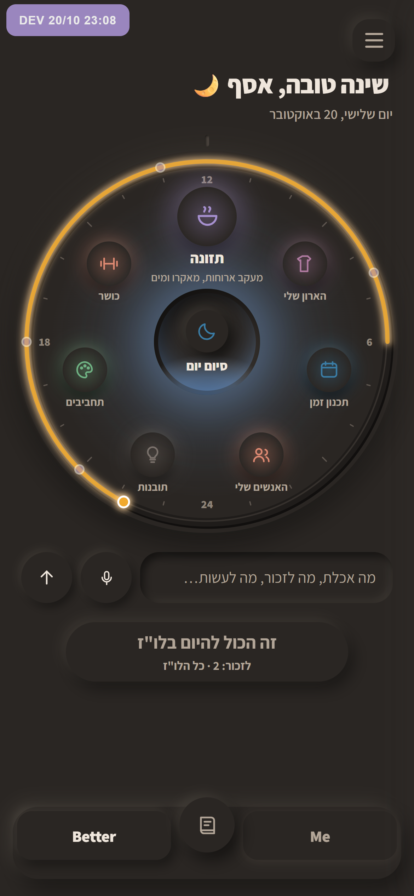
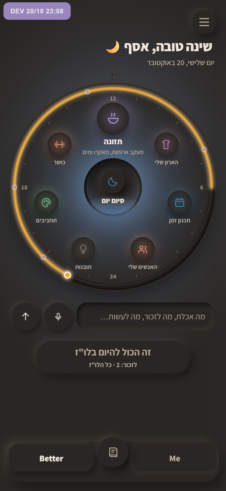
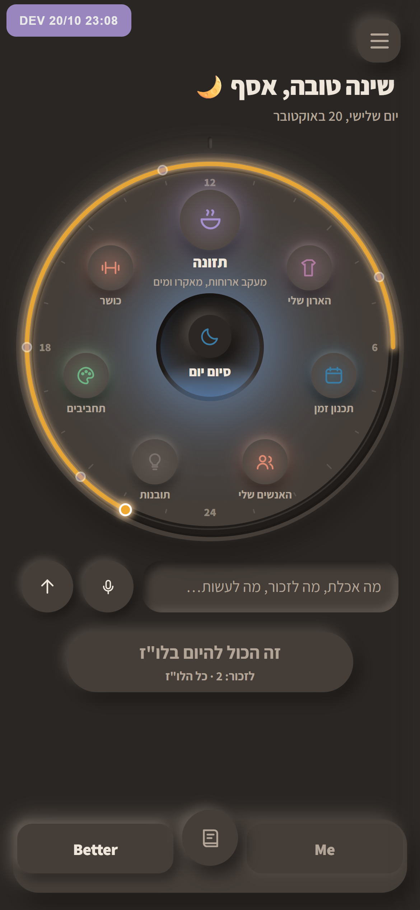
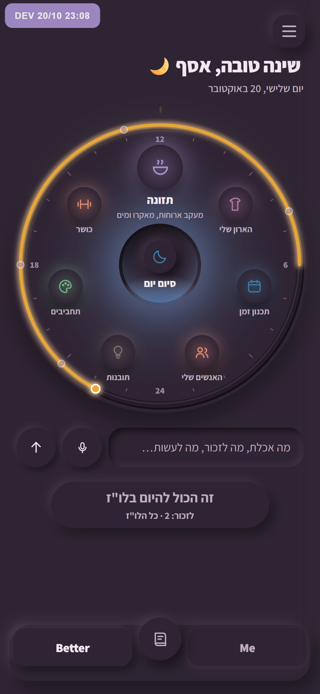
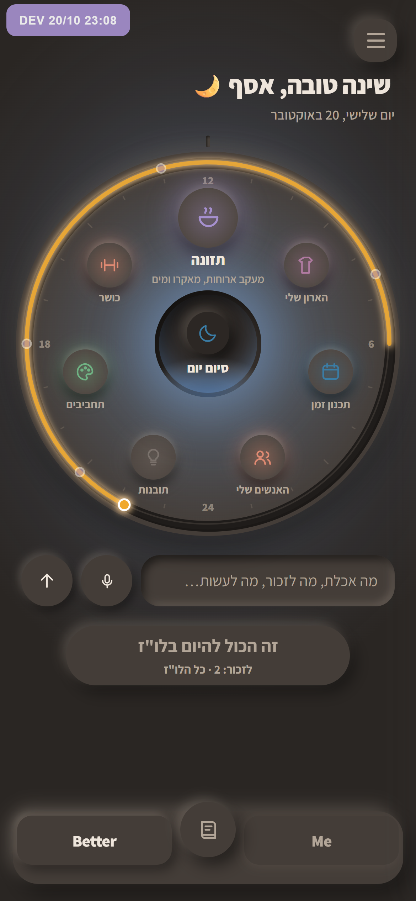

הלילה: אור במקום הבהרה
במקום להבהיר את החומר, וזה רק נראה דהוי, הלילה נשאר כהה, ומה שמשתנה הוא האור שבחדר. אלה צילומים של האפליקציה האמיתית בעשר בלילה.

מה שיש עכשיו
הכול באותו שחור.

1 · המנורה מאירה את החדר
הילה רחבה מהבאר נשפכת סביב החוגה, והקצוות נשארים כהים. המסך מרגיש מואר, לא דהוי.

2 · החפצים בהירים מהחדר
החוגה, הכפתורים והשורות בהירים בצעד אחד מהרקע, כמו חפצים שהאור נופל עליהם. העומק חוזר.

3 · צבע במקום אפור
חדר בגוון שזיף עמוק. עדיין לילה, אבל לא שחור.

1 + 2 · ההמלצה שלי
האור מהמנורה, וגם החפצים בהירים יותר. הלילה שאהבת, פחות כבד.
כדי לבחור, כתוב לי 1, 2, 3 או "1+2".